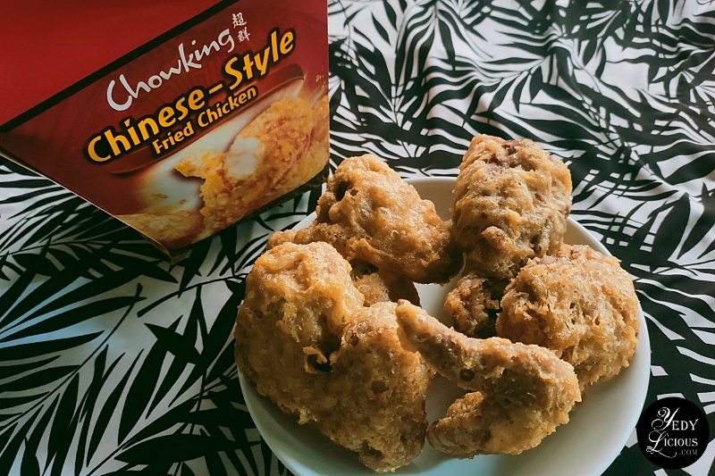
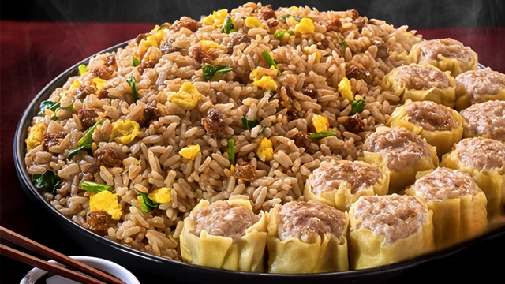
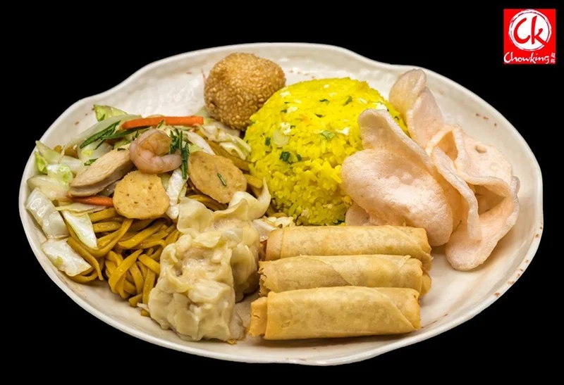

Fried Chicken
Very crunchy and juicy fried chicken served hot, ready to eat and enjoy. Try out one of the famous Chinese style fried chicken here in the Philippines.

Chao fan Siomai
Delicious and fresh siomai partnered with "Chao fan" or what we call the Chinese fried rice has been one of the staple food that the Filipino order and enjoy as lunch or dinner.

Chowking Lauriat Combo
Chao fan and Siomai partnered with different food such as lumpiang shanghai and pancit with other various delicacies is sure to make you full with its very affordable price all in one plate.

Pancit Canton
Taste the original Pancit Canton made from China. Different from how people in the Philippines make pancit canton, it is sure to catch the eyes of foodies and capture with its unique flavor and take on the pancit canton.